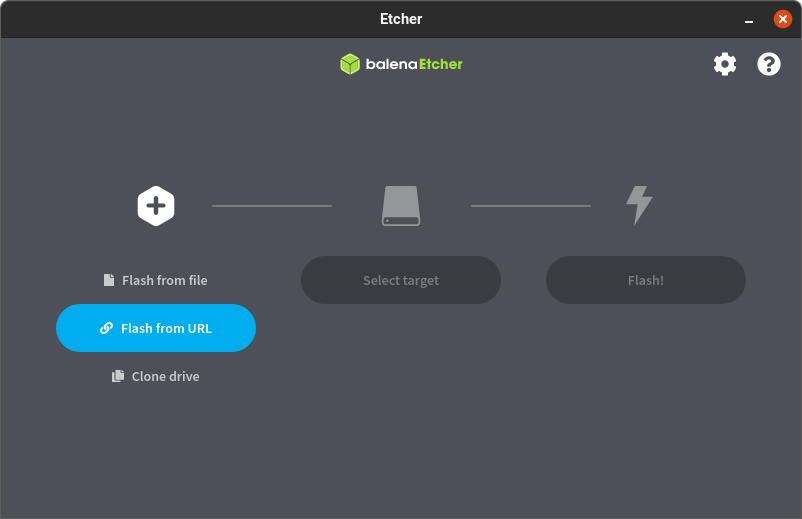
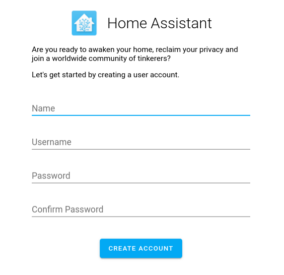
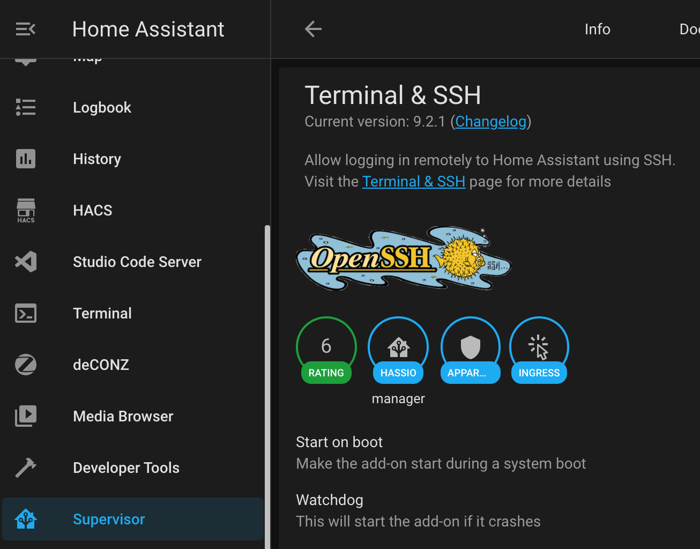
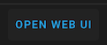

Installation de Home-Assistant
L’installation de Home-Assistant est très facile, il suffit de suivre les étapes décrites ici.
Flash
Il s’agit en résumé d’insérer votre carte MicroSD dans le lecteur de carte sur votre PC ou votre Mac, de télécharger le programme Balena Etcher et de flash l’image de Home Assistant dessus juste en saisissant l’URL de l’image disque correspondante https://github.com/home-assistant/operating-system/releases/download/6.6/haos_rpi4-64-6.6.img.xz (adaptée pour le matériel suggéré). 
Démarage
Insérez ensuite la carte MicroSD dans votre Rasberry, branchez-le au réseau via le cable ethernet, branchez-le au secteur via l’alimentation adaptée et vous devriez pouvoir vous connecter après quelques minutes sur http://homeassistant.local:8123/

Ce qui est flash sur la carte est le système d’exploitation Home Assistant ( HAOS ), qui est un Linux dédié pour faire tourner le programme Home Assistant ( HA ) lui-même. Il est bien entendu possible de faire tourner HA sur un autre OS, nous proposons ici la procédure d’installation la plus facile.
HACS
Pour l’installation de l’intégration Tesla, nous avons besoin du module HACS (Community Store). Cette étape est peut-être la plus délicate au niveau logiciel car il faut utiliser SSH et la ligne de commande. Il suffit toutefois de suivre les instructions ici.
En résumé, la procédure est la suivante:
- installer un add-on SSH: 
- une fois installé, cliquer sur le bouton pour accéder à la console 
- entrer
wget -O - https://get.hacs.xyz | bash -dans la console pour lancer d’installation de HACS - redémarrez éventuellement Home Assistant si nécessaire ( Configuration -> Server Controls -> Server Management -> Restart )
- vous devriez voir apparaître l’onglet HACS dans le menu à gauche: